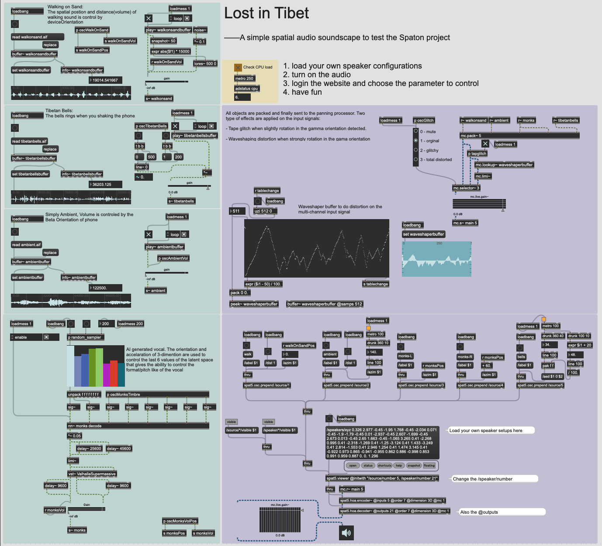

Demonstrations
1. Lost in Tibet
This is a very simple spatial soundscape I created to test the Spaton project. Besides the samples and Max patch, you still need extra files to run it.
- ValhallaSupermassive.vst: It's hard to find a good reverb effect in Max. You can download it free from the VALHALLA. You need to put the
ValhallaSupermassive.vstfile in the patch folder if the system vst folder doesn't add to search path - nn~: Make sure you have nn~ external install. You need to put the
nn~.mxoin the patch folder if you don't want to put in to the default Max external folder - monks.ts: The Rave model to be loaded by the nn~ external. You can find the download page here. The original name is
VCTK.ts. Please change it tomonks.tsand put it into the same folder of the patch.

Max/MSP Screenshot

@Generated by DALL·E 3 in ChatGPT